Мы живём в мире высоких технологий, когда поток информации буквально захлёстывает, его трудно самостоятельно осмыслить и переработать. На помощь нам приходят всевозможные инструкции, помогающие ориентироваться в различных областях: при эксплуатации всевозможных механизмов, приборов, промышленной и бытовой техники, при употреблении лекарств, при возникновении нештатных ситуаций. Краткое и понятное описание в инструкции очень важно для покупателя товара. Также в инструкции могут располагаться картинки, наглядно показывающие, как пользоваться купленным предметом.
При поставке товара в магазин в первую очередь необходимо запросить у водителя бумажные накладные на поставку в двух экземплярах и проверить наличие загруженной электронной накладной в 1С. В случае ее отсутствия немедленно связаться с менеджером отдела закупок для ее загрузки.
Перед тем как приступить к приёмке товара необходимо ознакомиться с условиями договора касающихсЯ приемки товара, возврата брака и оформления недовозов. Подробное описание условий в Приходной накладной при нажатии кнопки «Детали договора».
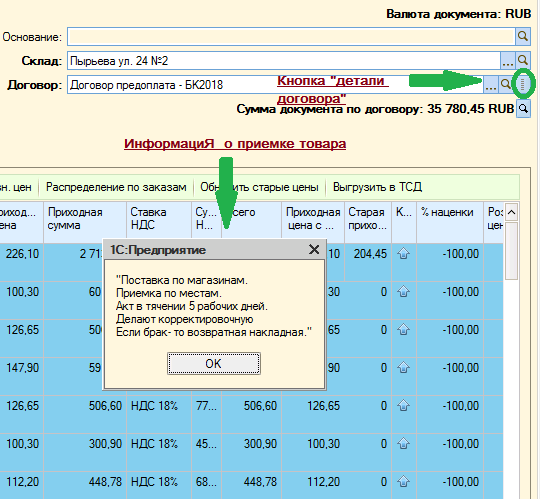Приёмка товара по условиЯм договора может осуществляться «ПОШТУЧНО» или «ПО МЕСТАМ»
В случае если товар принимается «ПО МЕСТАМ» бумажные накладные оформлЯютсЯ следующим образом:
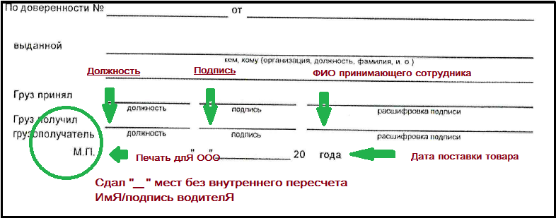В случае если товар принимается «ПОШТУЧНО», то водитель должен присутствовать при приёмке товара и в случае недовоза его подпись с согласием о недовезе должна быть и на бумажной накладной и на Акте разногласия.
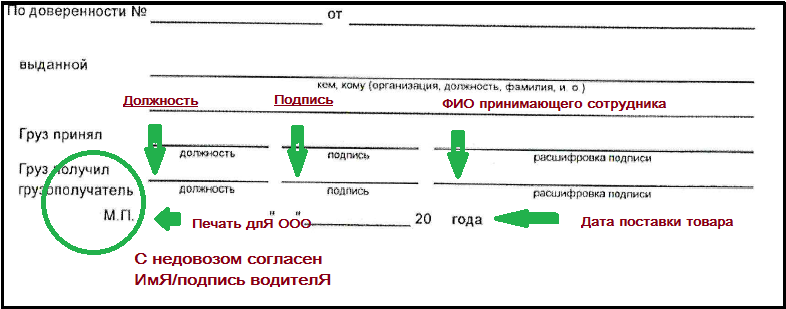Загруженную накладную в 1С выгружаем на ТСД.
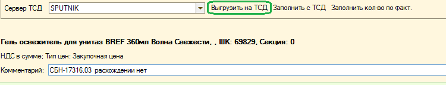На ТСД выбираем раздел "Приемка Товара". Открываем в ТСД приходную накладную и выбираем «СКАНИРОВАТЬ».
Все товары должны приниматься по штрих-коду на товаре. Если при сканировании на терминале выходит ошибка, нажимаем ОТМЕНА ВВОДА и откладываем товар.
Выгружаем принятый товар с ТСД в 1С.
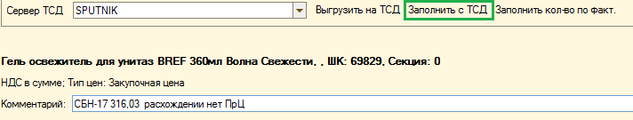При приемке товара необходимо принимать товар в количестве соответсвующем его единице продажи. Например: Поставщик предоставлЯет счет, в котором он продает нам товар равный 1 упаковке. Сотрудник принимающий товар, в столбце количество фактическое должен указывать количество равное 12 штукам.
В случае, если на товаре отсутствует ШК, в 1С заполняется вручную столбец количество фактическое.
Сотрудник принимающий товар ориентируетсЯ на загруженный счет в 1С, все излишки, пересорты и несогласованные новинки должны быть переданы поставщику.
Далее необходимо прикрепить к накладной в 1С последний оись бумажной накл, предворительно заполненный. И отправить на проведение.
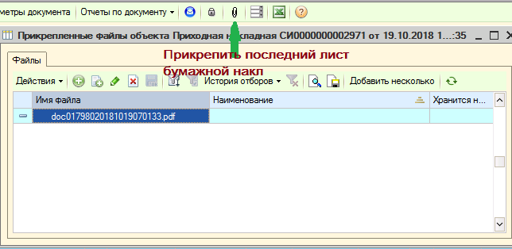Недовозом считаетсЯ товар, присутствующий в бумажной накладной поставщика и отсутствующий фактически. В случае недовоза на основании уже принятой и оформленной в 1С накладной создается Акт разногласиЯ
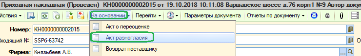В созданном Акте разногласия необходимо нажать "Удалить строки без корректировки"
Проверить в табличной части соответствуют ли все выведенные разногласия недовозу.
Далее нажать "ПЕЧАТЬ" и выбрать "ТОРГ-2 внешняя"
Поставьте подпись и ФИО на первом листе Акта Разногласия
На 4 листе Акта разногласия так же заполните Должность, Подпись, ФИО
Если прием товара "ПОШТУЧНО", то Водитель так же ставит подпись, ФИО в графе "Представитель грузоотправителя"
После составления Акта разногласиЯ (независимо от условий приемки) в обязательном порядке они должны быть предоставлены посредством электронной почты ПОСТАВЩИКУ. Оператора 1С поставить в копию.
Сканы Актов разноглася необходимо подцепить к приходной накладной.
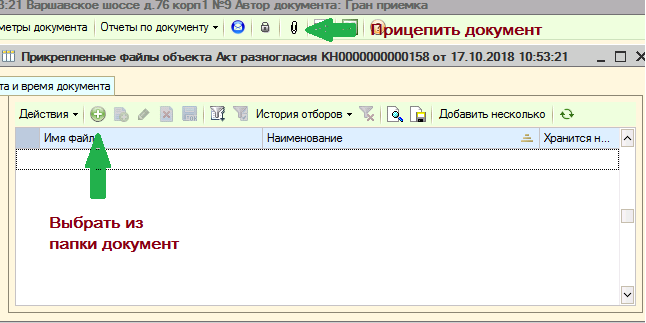По всем поставкам, на основании которых были созданы акты разногласия, сотрудник принимающий товар запрашивает замены накладных или корректировочную счет-фактуру. В случае отказа поставщика от предоставления документов, необходимо передать инфрмацию курирующему менеджеру посредством задачи в 1С, на основании документа.
Все возвраты поставщику осуществляются со склада «БРАК», проверьте создано ли Вами перемещение на склад БРАК перед созданием документа «Возврат поставщику».
Нужно открыть документы "Возврат поставщику" и добавить новый
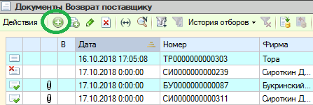Для корректного заполнения цены необходимо проверить во вкладке «Параметры документа» вариант расчета НДС.
Если, задан параметр «НДС сверху» или «НДС в сумме» необходимо изменить на «Без НДС»
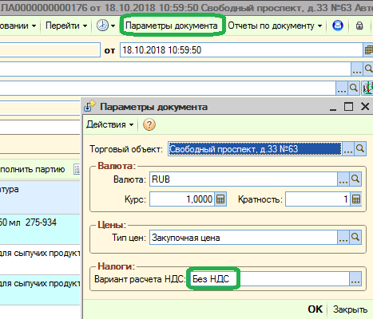После заполнения табличной части необходимо установить партии для корректного списания товара.
Для этого необходимо нажать кнопку "ЗАПОЛНИТЬ ПАРТИЮ"
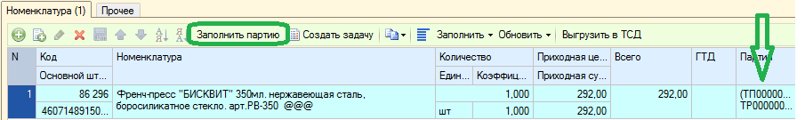Перед передачей документов поставщику в день осуществления фактического возврата необходимо в документе установить текущее число и снова нажать"ЗАПОЛНИТЬ ПАРТИЮ".
Распечатать документ возврата по форме ТОРГ-12 в 2-х экземплярах, на бумажной накладной проставить печать, подпись, ФИО.
Водитель должен предоставить доверенность на получение товара
Некоторые поставщики для согласования возврата просят заполнить дополнительные формы - они находятся во вкладке «Рекламации».
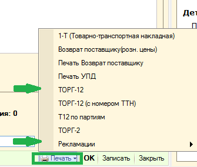После передачи товара поставщику, подписанные документы возврата и доверенность от поставщика необходимо отсканировать и «прицепить» к документу «Возврат поставщику».
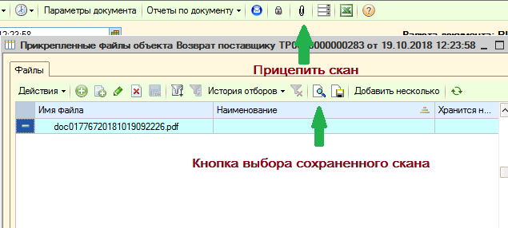Далее, на основании документа «Возврат поставщику» поставить задачу сотруднику КРО для проведения документа. В поле «Задача» обязательно указать – «Возврат»
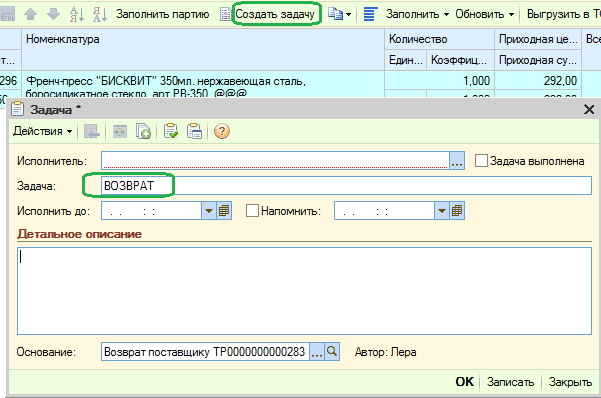Терминал Сбора Данных (ТСД) должен содержать в себе актуальную информацию о товаре. Каждое утро с понедельника по пятницу ТСД необходимо обновлЯть. ДлЯ этого необходимо в 1С выбрать в левом верхнем углу «Файл» далее «CleverenceSoftВыгрузкаДанныхВТСД». ТСД в это время необходимо установить на подставку для обмена данных. Если обработки нет среди последних используемых, то выбираем в верхнем левом углу
ФАЙЛ/ОТКРЫТЬ/SERVER-R/DOCUMENTS/ОБЩАЯ ИНФОРМАЦИЯ/ОБРАБОТКИ,ЗАГРУЗКИ 1С и выбираем «CleverenceSoftВыгрузкаДанныхВТСД».
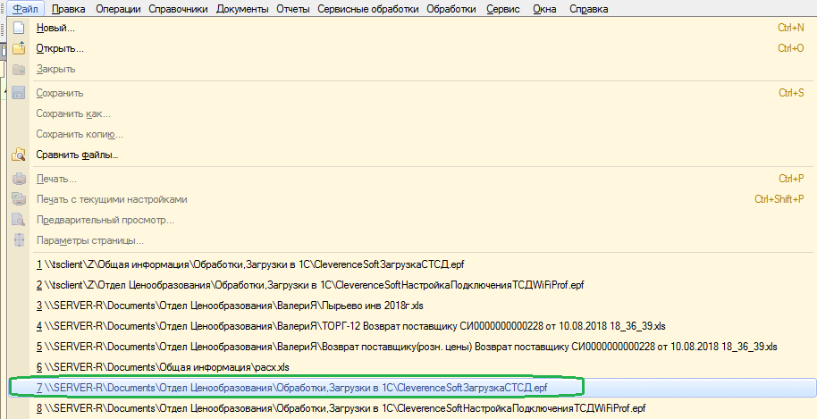В открывшемсЯ окне необходимо заполнить строки:
Далее необходимо нажать на кнопку «Заполнить» в левом верхнем углу. В нижней части окна «Выгружаемые товары» заполнятся строки с товаром в которых будут указаны Наименования, Штрих-кода, Единицы, Количества и Розничные цены. Далее в правом нижнем углу нажать на кнопку «Выгрузить».
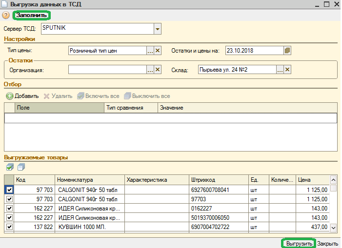Помните, что терминал должен находиться на подставке до завершениЯ загрузки.
Важно понимать, что не выгружая обновленную информацию о товаре, Вы отказываете себе в быстрой и корректной приемке товаров. Обучение выгрузке сотрудников принимающих товар и контроль за наличием обновленного справочника в ТСД закреплены за УправлЯющим магазина. Товары, которые разрешается не принимать по ТСД это товары не имеющие ШК.
Накладные отправляются в бухгалтерию каждую неделю с водителем. Все накладные должны быть отсортированы согласно реестру. Реестр необходимо давать водителю на подпить о получении накладных
Необходимо зайти в реестр документов, установить период и заполнить табличную чать.
Важно понимать, что возвраты отдаем со склада Брак, поэтому этот склад необходимо включить в выбранные полЯ в табличной части.
Далее нажать кнопку "Сформировать"
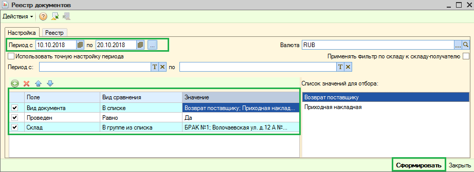Заходим в акты о переоценки и сoздаем новый документ.
Нажимаем "Заполнить"/"По условиЯм" И переходим во вкладку "Расширенный фильтр"
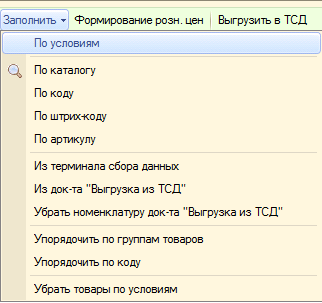 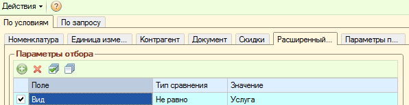Далее нажимаем на плюсик в сплывшем окне, выбираем "КатегориЯ товара (св-во Номенклатура)"
В колонке "Тип сравнениЯ" стоит "Равно"
В колонке "Значения" через 3 точки выбираем категорию "Н"
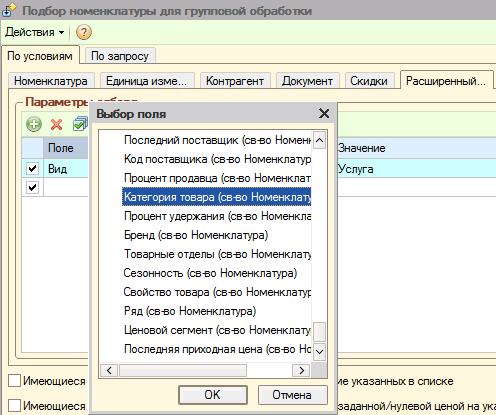 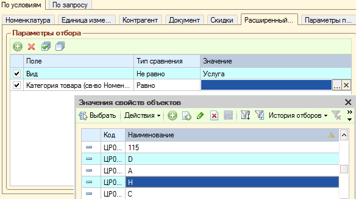Ставим галочку "Имеющиеся на остатках на указанную дату".
Дату ставим ( на завтрашний день. Например, сегодня 01.11.2018 Ставим на 02.11.2018) И нажимаем "Выполнить".
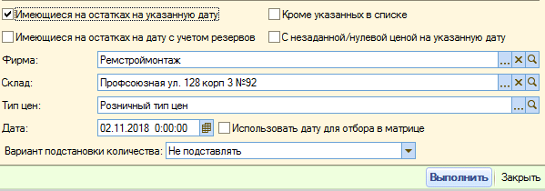В всплывающем окне нажимаем "ДА"
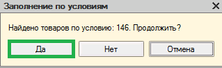Документ можно "Записать".
Заходим в формирование цен и нажимаем 3 кнопки в строгой последовательности:
Убедитесь, что сумма переоценки 0 рублей. Запишите документ и распечатайте ценники.
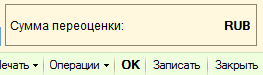© ТЯпко ВалериЯ Алексеевна.
Желаем хороших продаж и отличного настроения!!!